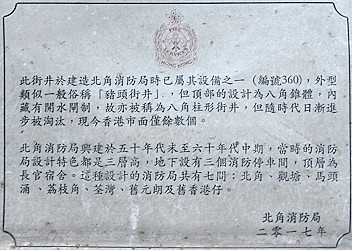

The confusing "Pedestal hydrant"
[Sources for this page]Sources for this page
- Cambridge Dictionary | PEDESTAL English meaning | https://dictionary.cambridge.org/dictionary/english/pedestal
- Hong Kong Fire Services Department (HKSAR Government) | Testing and Commissioning Checklist for Street Fire Hydrant System | https://www.hkfsd.gov.hk/eng/source/checklist/Checklist_Street_Fire_Hydrant_201204_20251119_113111.pdf
- Hong Kong Fire Services Department (HKSAR Government), on Y2008-M01-D23 | FSD Circular Letter No. 1/2008 - Inspection Checklist for Street Fire Hydrant System | https://www.hkfsd.gov.hk/eng/source/circular/2008_01.pdf
- Hong Kong Fire Services Department (HKSAR Government), on Y2008-M01-D23 | 消防處通函第1/2008號 街道消防栓系統的檢查核對表 | https://www.hkfsd.gov.hk/chi/source/circular/2008_01.pdf
- Water Supplies Department (HKSAR Government), originally on Y1995-M11-D20, revised on Y2003-M09-D05 | Water Supplies Department Standard Drawings 1.34B: Painting on Fire Hydrant | https://www.wsd.gov.hk/filemanager/en/content_1599/WSD0134-B.pdf
- Water Supplies Department (HKSAR Government), revised on Y2024-M03-D01 | 水管改善工程與緊急維修 (I am specifically referring to the Chinese version of the page) | https://www.wsd.gov.hk/tc/water-matters/water-distribution/07/
- Waterworks Office (British Hong Kong), Y1961-M08 to Y1964-M06 | HKRS287-1-677 Pedestal Fire Hydrants - Installation of Hydrants - Hong Kong | Public Records Office, Government Records Service (HKSAR Government)
- Waterworks Office (British Hong Kong), Y1961-M09 to Y1971-M10 | Hong Kong Fire Command Hydrant Review July1971-Dec1972 | (in HKRS287-1-678 Fire Hydrants Installation & Programme - Hong Kong) | Public Records Office, Government Records Service (HKSAR Government)
- Waterworks Office (British Hong Kong), Y1967-M03 to Y1970-M08 | HKRS287-1-681 Fire Hydrants - Island - Record of installation, removals, changes of position or type | Public Records Office, Government Records Service (HKSAR Government)
- Waterworks Office (British Hong Kong), Y1970-M07 to Y1972-M04 | HKRS287-1-682 Fire Hydrant - Island - Records of Installation, Removals, Changes of Position or Type | Public Records Office, Government Records Service (HKSAR Government)
- Waterworks Office (British Hong Kong), Y1970-M12 to Y1971-M11 | HKRS287-1-685 Fire Hydrant - Mainland - Records of Installation, Removals, Changes of Position or Type | Public Records Office, Government Records Service (HKSAR Government)
- Waterworks Office (British Hong Kong), Y1972-M04 to Y1975-M03 | HKRS287-1-683 Fire Hydrant - Island - Records of Installation, Removals, Changes of Position or Type | Public Records Office, Government Records Service (HKSAR Government)
Pedestal means the "base of something". "Pedestal" hydrant is a word you will see in the 1960s old records, 1990s standard drawings, 2000s hydrant inspection checklist, and 2020s webpage about about water supply disruption. So what is a "Pedestal" hydrant? If you only read the recent sources, you might come to the conclusion that a "Pedestal" hydrant is a Round Head, but that is not the case if you read the 1960s records.
The name and its usage in the recent times
In the 2008 hydrant checklist, "pedestal" is translated as 柱型 to Chinese, which means "pillar-shaped" or "column-shaped". The accompanying graphic showed a Round Head hydrant.
In 2017, a plaque with only Chinese text was installed in North Point Fire Station next to a retired "Octagonal hydrant" numbered 360, referring to this type of hydrant as the 八角柱形街井. 八角柱 means octagonal prism, so you might think "oh so this type is named octagonal prism hydrant". But as mentioned above, 柱型 can be translated to "Pedestal" in official literature, does that mean these hydrants are called "octagonal pedestal hydrant"...?
 |
| Perspective-adjusted photo of the plaque next to the retired green Octagonal hydrant 360 |
| North Point Fire Station |
| Photo taken in Y2026-M04 |
In the Chinese version of a 2024 Water Supplies Department webpage about water supply disruption, "pedestal" is translated directly to 座墩 (meaning base of something). The accompanying photo showed a Round Head hydrant.
Thirty years ago, in the standard drawings
In WSD 1.34 - the standard drawings about fire hydrant painting dated 1995, a Round Head hydrant graphic is accompanied by the text Pedestal Hydrant (Round Head). As discussed below, Round Head is just a type of "pedestal hydrant".
Sixty years ago, in the records, and my speculation
There are at least three, possibly five (?) types of "pedestal" hydrant mentioned in the hydrant installation records:
- Pedestal Hydrant
- Pedestal Hydrant (H.H.)
- Pedestal Hydrant (H.H.V.)
- Pedestal Hydrant (Round Head) / (R.H.)
- Pedestal Hydrant (R.H.V.)
The one without suffix does not specify which "pedestal" type they were talking about, which might refer to any of the other four types. The one with Round Head or (R. H.) suffix is obviously talking about Round Head. I am yet to find an unabbreviated mention of (H.H.), (H.H.V.), and (R.H.V.). I think it is possible for (R.H.V.)'s full name to be "Round Head with Valve", which would be a possible name for "Prototype Pedestal" because of that type's design of having the valve incorporated into the hydrant and having a similar apperance to a Round Head, but this is just my speculation. It is not clear if (H.H.) and (H.H.V.) are the same types, and I also have no idea what (H.H.) and (H.H.V.) stands for.
With "Octagonal hydrant" and Round Head both referred to as "Pedestal Hydrant" (and the confusing list of suffixes), I believe "pedestal" might be a category of hydrants. Perhaps hydrants with the "one front nozzle two side nozzles" configuration are categorised as "pedestal" hydrants? After all, there are no separate checklists for hydrant types other than Round Head, such as "Octagonal hydrant" (the other confirmed "Pedestal hydrant") and AVK Model 2700 (which have the same "one front nozzle two side nozzles" configuration).
As late as 1971, "Pedestal hydrant" (without suffix) was still used to refer to "Octagonal hydrants" in resiting records of four such hydrants, even though Round Head - another type referred to as "Pedestal hydraant", had already been introduced a decade before that.
Note that "Pedestal Hydrant" was often abbreviated to "Ped. Hyd." or "P.H.", and likewise with Round Head being abbreviated to "R.H." in the records. Possibly because of these abbreviations, even government officials could be confused. For example, I have seen officials calling them "pedestrian hydrants" in one of the records.